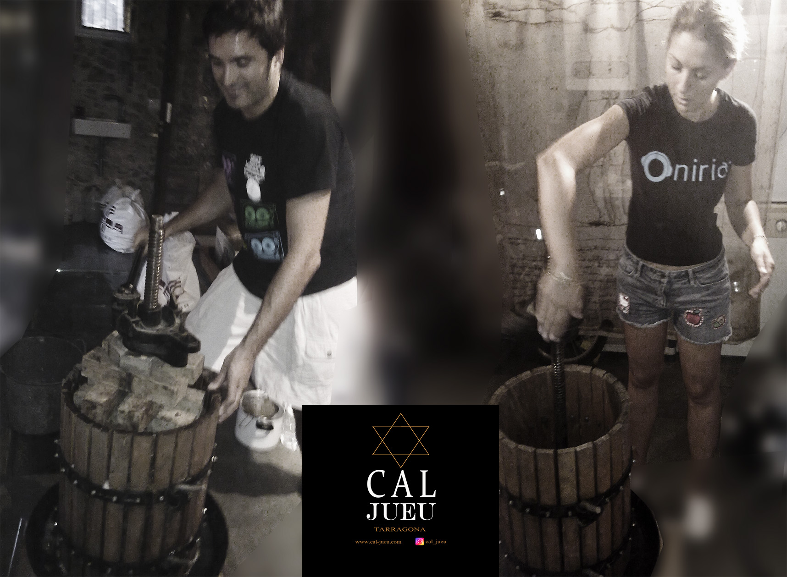

Nuestros primeros pasos en esta casa. Haciendo mistela
MISTELA.Un licor hecho en esta casa
La mistela del Penedès: el dulce néctar de la región vinícola. Si estás buscando un vino dulce y especial, no puedes dejar de probar la mistela del Penedès. El Penedès, una región vinícola situada en Cataluña, España, es conocido por sus magníficos vinos, y la mistela es uno de los tesoros más apreciados de esta zona.
- Qué es la mistela.La mistela es un vino dulce elaborado tradicionalmente en el Penedès utilizando uvas locales. Se distingue por su sabor intenso y su delicado equilibrio entre dulzura y acidez. La base de la mistela son las uvas moscatel y parellada, que se cultivan en los viñedos de la región, y se recolectan en su momento óptimo de madurez para obtener todos sus sabores y aromas característicos.
- La elaboración de la mistela del Penedès es un proceso cuidadoso que garantiza la calidad y la excelencia de este vino dulce. Las uvas se prensan suavemente y se añade alcohol de origen vitivinícola para detener la fermentación y conservar los azúcares naturales de la uva. Esto da como resultado un vino dulce y aromático con un contenido alcohólico moderado.
- Notas de cata.La mistela del Penedès destaca por su aroma floral y afrutado, con notas de melocotón, albaricoque y cítricos. En boca, se aprecia su dulzura equilibrada con una acidez refrescante, lo que la convierte en una opción perfecta para disfrutar como aperitivo o como acompañamiento de postres. Su color dorado y brillante es una invitación a deleitar todos los sentidos
- Maridaje. La mistela del Penedès es muy versátil en cuanto a maridaje. Combina especialmente bien con postres como tartas de frutas, pasteles de crema y helados. También puede acompañar quesos azules y foie gras, o ser disfrutada sola como un verdadero néctar de lujo.
- La mistela del Penedès es un tesoro enológico que no puedes dejar pasar si te gusta el vino dulce. Sus sabores y aromas intensos te transportarán a la rica tradición vinícola de la región y te permitirán disfrutar de momentos dulces y especiales. Así que no pierdas la oportunidad de probar la mistela del Penedès y descubrir todo lo que esta joya vinícola tiene para ofrecer.Espero que este contenido te haya sido útil y te inspire a disfrutar de la mistela del Penedès. ¡Salud!
Full Article